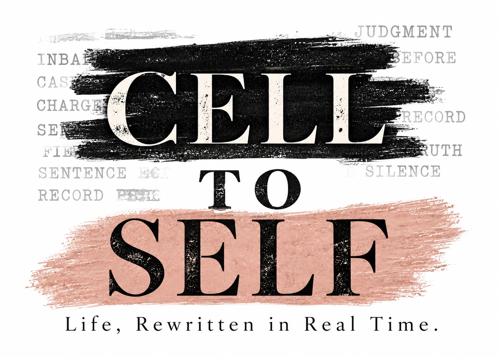

Hey!
That’s
mine.
A bedroom. A kitchen. A shower. Even the Wi-Fi. Ordinary freedom, finally spectacular.
Read StoryThis isn’t a comeback story. It’s real life after prison, written in real time.
No polish. No pretending.
Read the Story
What they printed was part of the story.
What they missed is everything that came next.
Freedom doesn’t arrive in order. Neither do these stories.
A bedroom. A kitchen. A shower. Even the Wi-Fi. Ordinary freedom, finally spectacular.
Read StoryThe article arrived. It just wasn’t the loudest voice in the room anymore.
Read StoryBut I’m writing it anyway.
Read StoryFreedom looked sudden. The work started years before the gate opened.
Read StoryActual letters about debit cards, probation, men, meetings, peanut butter Snickers, work, God, and everything freedom forgot to explain.
I write about life after prison while I'm still figuring it out. Recovery. Reentry. Family. Faith. Grief. Work. Men I probably shouldn't date. And all the weird little things nobody tells you about freedom.
Meet Amy“Never underestimate the beauty of an ordinary day.”
